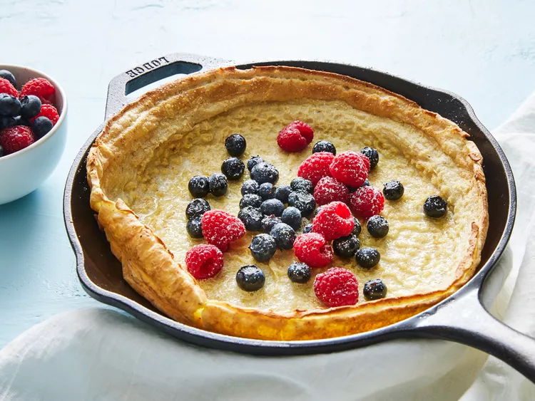

Dutch Baby

Description
A Dutch baby is a cross between a pancake
and a popover. It’s similar to a large
Yorkshire pudding. Unlike other types of
pancakes, Dutch babies are baked in the
oven instead of fried on the stove. This
large, fluffy pancake is excellent for
breakfast, brunch, lunch and dessert any
time of year!
Ingredients
- 2 eggs
- 1/2 cup milk
- 1/2 cup sifted all-purpose flour
- 1 pinch salt
- 1 pinch ground nutmeg
- 2 tbsp butter
- 2 tbsp confectioners' (icing) sugar
Directions
- Place a 10-inch cast iron skillet into
the oven and preheat to 475 degrees F
- Whisk eggs in a medium bowl until light.
Whisk in milk, then gradually whisk in
flour, nutmeg, and salt.
- Remove the skillet from the oven and
reduce the heat to 425 degrees F.
Place butter into the hot skillet and
swirl to melt over the bottom and sides.
- Pour batter into the skillet and return
to the oven.
- Bake until puffed and lightly browned,
about 12 minutes. Remove and immediately
sift confectioners' sugar over top. Enjoy!